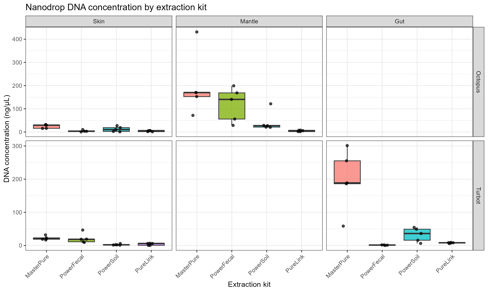
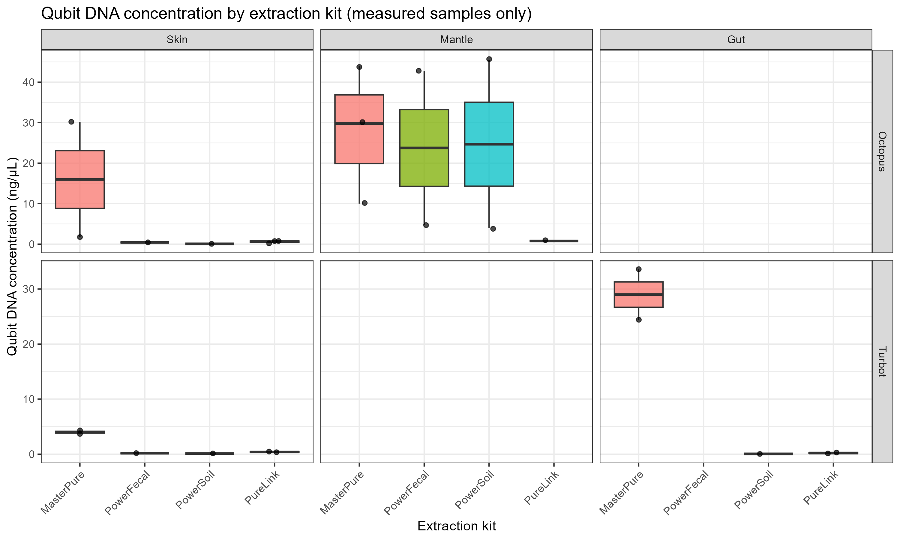
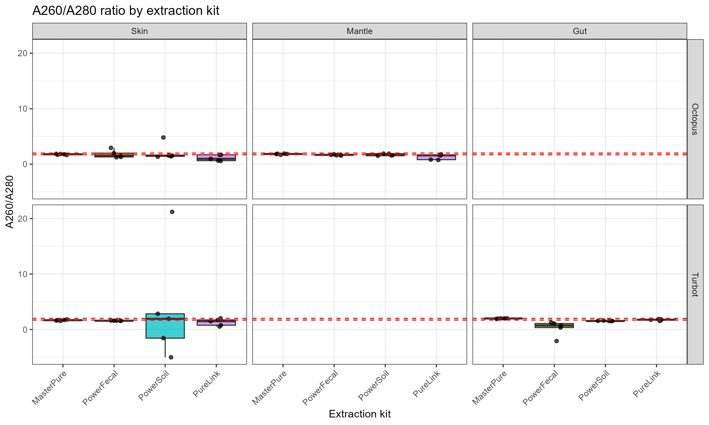
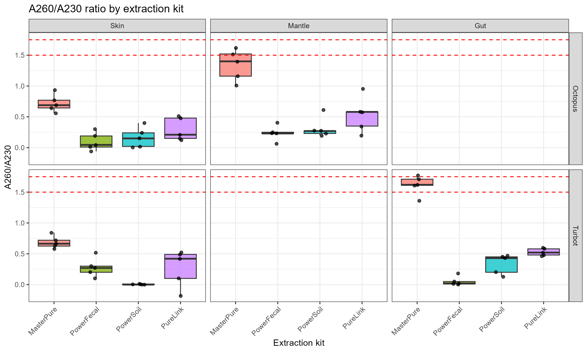
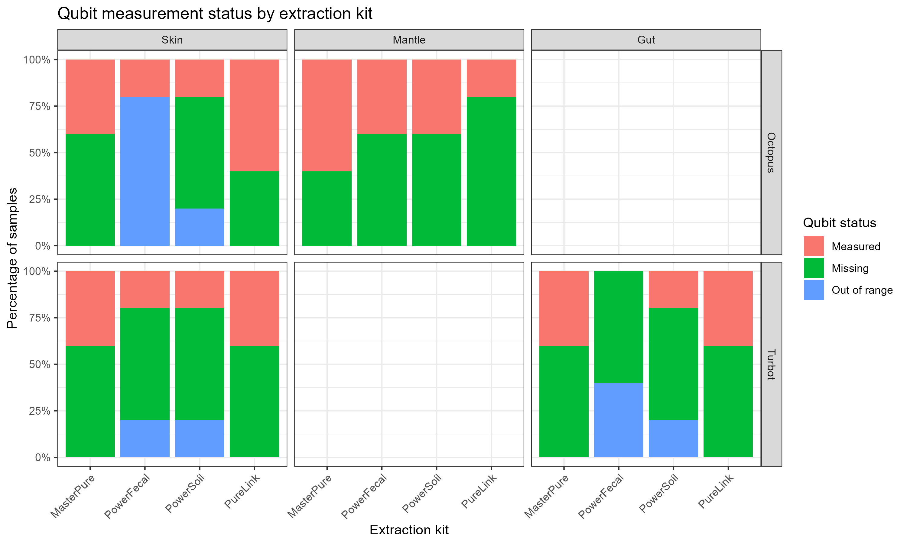

3 DNA extraction and quantification
3.1 Extraction kits
Four commercially available DNA extraction kits were selected to evaluate their performance across host-associated marine samples from two species (Octopus and Turbot) and four biological matrices (octopus skin, octopus mantle, turbot skin, and turbot gut). The selected kits represent different lysis and purification chemistries, allowing comparison of enzymatic and mechanical approaches under the same experimental design.
MasterPureTM Complete DNA and RNA Purification Kit (# MC85200, Epicentre) + Pathogen Lysis Tubes S (# 19091, Qiagen)
This protocol combines chemical and enzymatic extraction with mechanical disruption through pathogen lysis tubes. It is intended to recover nucleic acids from challenging biological matrices and is widely used in microbiological applications requiring relatively high DNA yield.QIAamp® PowerFecal® Pro DNA Kit (# 51804, Qiagen) = PowerFecal kit
The protocol begins with mechano-chemical cell disruption through bead beating in lysis buffer. Inhibitor Removal Technology is then applied to remove substances that may interfere with downstream PCR applications. DNA is captured on a silica spin column, washed, and eluted.DNeasy® PowerSoil® Pro Kit (# 47014, Qiagen) = PowerSoil kit
This kit also relies on bead beating for cell disruption and incorporates inhibitor-removal steps intended to eliminate humic substances, proteins, and other compounds that may compromise downstream enzymatic reactions. DNA is purified using a silica membrane column.PureLink Genomic DNA Mini Kit (# K182002, Invitrogen) = PureLink kit
Multiple protocols are available for this kit. In this study, the Gram-Positive Bacterial Cell Lysate protocol was applied to all samples. Lysis is achieved through a combination of heat and enzymatic treatment (lysozyme and proteinase K), followed by cleanup and silica-column purification.
The inclusion of kits with different lysis strategies was particularly relevant for this study because marine host-associated matrices may differ widely in mucus content, biomass, inhibitor load, and microbial composition, all of which can influence DNA recovery and purity.
3.2 DNA quantification
DNA concentration and purity were assessed using two complementary methods:
- Nanodrop spectrophotometry, which provides an estimate of total nucleic acid concentration together with the absorbance ratios A260/A280 and A260/A230
- Qubit dsDNA High Sensitivity Assay (Thermo Fisher Scientific), which provides fluorometric quantification of double-stranded DNA and is less affected by contaminants than spectrophotometric measurements
Nanodrop measurements were available for the full dataset, whereas Qubit measurements were only available for a subset of samples. Some samples were recorded as out of range or could not be quantified, which is informative in itself because it reflects low DNA concentration or low assay detectability.
In the downstream analysis, Nanodrop concentrations lower than or equal to zero were treated as non-informative for quantitative comparisons. Statistical analyses were conducted on paired biological replicates, since each individual sample was processed with all extraction kits.
4 Results
4.1 Overview of the dataset
The dataset comprised 80 extraction outcomes in total, corresponding to 20 samples per kit across four extraction kits. The study included two host species (Octopus and Turbot) and four biological matrices: octopus skin, octopus mantle, turbot skin, and turbot gut. Each biological sample was processed with all extraction kits, enabling a paired comparison framework.
Each biological replicate was extracted with all four kits. When present, repeated swabbings correspond to technical rows within the same biological sample.
4.2 Global performance across extraction kits
4.2.1 Summary by kit
| Kit | Number of samples | Mean DNA concentration (Nanodrop, ng/µL) | SD DNA concentration (Nanodrop, ng/µL) | Median DNA concentration (Nanodrop, ng/µL) | Minimum DNA concentration (Nanodrop, ng/µL) | Maximum DNA concentration (Nanodrop, ng/µL) | Mean A260/A280 ratio | SD A260/A280 ratio | Median A260/A280 ratio | Mean A260/A230 ratio | SD A260/A230 ratio | Median A260/A230 ratio | Qubit: number measured | Qubit: number out of range | Qubit: number missing | Mean DNA concentration (Qubit, ng/µL) | SD DNA concentration (Qubit, ng/µL) | Median DNA concentration (Qubit, ng/µL) | Minimum DNA concentration (Qubit, ng/µL) | Maximum DNA concentration (Qubit, ng/µL) |
|---|---|---|---|---|---|---|---|---|---|---|---|---|---|---|---|---|---|---|---|---|
| MasterPure | 20 | 110.93345 | 117.30121 | 45.2245 | 15.39 | 431.1 | 1.8047 | 0.1354358 | 1.820 | 1.0896 | 0.4391739 | 0.965 | 9 | 0 | 11 | 20.18111 | 15.4970710 | 24.4000 | 1.740 | 43.90 |
| PowerFecal | 20 | 39.94806 | 62.38570 | 10.7955 | 0.08 | 199.0 | 1.3255 | 0.9457791 | 1.555 | 0.1657 | 0.1523148 | 0.185 | 4 | 7 | 9 | 12.02975 | 20.5570993 | 2.6195 | 0.180 | 42.70 |
| PowerSoil | 20 | 22.62500 | 28.22981 | 17.3500 | 0.50 | 121.4 | 2.3125 | 4.8139883 | 1.550 | 0.2045 | 0.1892221 | 0.200 | 5 | 3 | 12 | 9.91680 | 19.9064584 | 0.1150 | 0.051 | 45.40 |
| PureLink | 20 | 5.14000 | 2.90524 | 5.9000 | 0.30 | 9.3 | 1.3720 | 0.5130056 | 1.625 | 0.4060 | 0.2460937 | 0.480 | 8 | 0 | 12 | 0.46450 | 0.2699196 | 0.3950 | 0.121 | 0.78 |
A clear ranking emerged from the global descriptive summary. MasterPure showed the best overall performance across all major indicators. It yielded the highest mean DNA concentration by Nanodrop (111 ng/µL) and also the highest mean Qubit concentration (20.2 ng/µL), indicating that its superior performance was not restricted to spectrophotometric estimates alone. In contrast, the remaining kits showed markedly lower values: PowerFecal yielded intermediate concentrations, PowerSoil performed below PowerFecal, and PureLink showed the weakest overall recovery.
MasterPure also achieved the highest proportion of Qubit-measured samples (45%), suggesting that it more frequently generated DNA amounts above the assay detection range. This result is consistent with its higher global yield and reinforces the idea that the kit recovered more measurable double-stranded DNA, not simply more absorbance signal.
4.2.2 Summary by kit, species, and tissue
| Kit | Species | Tissue | Number of samples | Mean DNA concentration (Nanodrop, ng/µL) | SD DNA concentration (Nanodrop, ng/µL) | Median DNA concentration (Nanodrop, ng/µL) | Minimum DNA concentration (Nanodrop, ng/µL) | Maximum DNA concentration (Nanodrop, ng/µL) | Mean A260/A280 ratio | SD A260/A280 ratio | Median A260/A280 ratio | Mean A260/A230 ratio | SD A260/A230 ratio | Median A260/A230 ratio | Qubit: number measured | Qubit: number out of range | Qubit: number missing | Mean DNA concentration (Qubit, ng/µL) | SD DNA concentration (Qubit, ng/µL) | Median DNA concentration (Qubit, ng/µL) |
|---|---|---|---|---|---|---|---|---|---|---|---|---|---|---|---|---|---|---|---|---|
| MasterPure | Octopus | Skin | 5 | 24.58320 | 8.3041504 | 29.214 | 15.39 | 31.999 | 1.7610 | 0.0861365 | 1.785 | 0.7186 | 0.1404699 | 0.689 | 2 | 0 | 3 | 15.9700000 | 20.1242590 | 15.970 |
| PowerFecal | Octopus | Skin | 5 | 4.32375 | 4.2393616 | 3.197 | 0.51 | 10.391 | 1.7980 | 0.7018989 | 1.540 | 0.0968 | 0.1452367 | 0.045 | 1 | 4 | 0 | 0.4290000 | NA | 0.429 |
| PowerSoil | Octopus | Skin | 5 | 11.92000 | 11.2741740 | 10.400 | 0.50 | 27.400 | 2.1260 | 1.5030735 | 1.540 | 0.1620 | 0.1652876 | 0.150 | 1 | 1 | 3 | 0.0680000 | NA | 0.068 |
| PureLink | Octopus | Skin | 5 | 3.94000 | 2.4673873 | 5.600 | 1.00 | 6.000 | 1.1100 | 0.5543014 | 0.960 | 0.2940 | 0.1866280 | 0.210 | 3 | 0 | 2 | 0.5786667 | 0.3197270 | 0.746 |
| MasterPure | Octopus | Mantle | 5 | 199.05400 | 135.9775036 | 169.980 | 71.49 | 431.100 | 1.8140 | 0.0864870 | 1.830 | 1.3400 | 0.2561250 | 1.400 | 3 | 0 | 2 | 27.9000000 | 17.0296800 | 29.800 |
| PowerFecal | Octopus | Mantle | 5 | 118.42000 | 73.3683992 | 140.400 | 28.40 | 199.000 | 1.6600 | 0.1007472 | 1.680 | 0.2360 | 0.1240161 | 0.230 | 2 | 0 | 3 | 23.7550000 | 26.7922759 | 23.755 |
| PowerSoil | Octopus | Mantle | 5 | 43.60000 | 43.6438426 | 27.100 | 20.10 | 121.400 | 1.6960 | 0.1807761 | 1.610 | 0.3160 | 0.1669731 | 0.270 | 2 | 0 | 3 | 24.6750000 | 29.3095761 | 24.675 |
| PureLink | Octopus | Mantle | 5 | 4.82000 | 3.0103156 | 5.600 | 1.60 | 7.800 | 1.3180 | 0.4962560 | 1.590 | 0.5320 | 0.2840246 | 0.580 | 1 | 0 | 4 | 0.7800000 | NA | 0.780 |
| MasterPure | Turbot | Skin | 5 | 22.13720 | 5.9141169 | 20.156 | 16.72 | 31.900 | 1.6720 | 0.1032957 | 1.680 | 0.6866 | 0.1019304 | 0.664 | 2 | 0 | 3 | 3.9950000 | 0.4596194 | 3.995 |
| PowerFecal | Turbot | Skin | 5 | 21.01400 | 14.9730718 | 18.700 | 9.29 | 46.600 | 1.5800 | 0.0273861 | 1.580 | 0.2780 | 0.1556278 | 0.270 | 1 | 1 | 3 | 0.1800000 | NA | 0.180 |
| PowerSoil | Turbot | Skin | 5 | 2.56000 | 1.9932386 | 2.100 | 1.00 | 6.000 | 3.8800 | 10.1717698 | 1.930 | 0.0040 | 0.0054772 | 0.000 | 1 | 1 | 3 | 0.1150000 | NA | 0.115 |
| PureLink | Turbot | Skin | 5 | 3.96000 | 3.2152760 | 6.100 | 0.30 | 6.700 | 1.3120 | 0.6385296 | 1.500 | 0.2700 | 0.3019934 | 0.420 | 2 | 0 | 3 | 0.3950000 | 0.0919239 | 0.395 |
| MasterPure | Turbot | Gut | 5 | 197.95940 | 91.7294699 | 188.636 | 58.45 | 301.281 | 1.9718 | 0.0463595 | 1.990 | 1.6132 | 0.1558676 | 1.619 | 2 | 0 | 3 | 29.0000000 | 6.5053824 | 29.000 |
| PowerFecal | Turbot | Gut | 5 | 1.15000 | 0.8080842 | 1.365 | 0.08 | 1.790 | 0.2640 | 1.3553339 | 0.720 | 0.0520 | 0.0739594 | 0.020 | 0 | 2 | 3 | NA | NA | NA |
| PowerSoil | Turbot | Gut | 5 | 32.42000 | 20.8121839 | 36.100 | 6.40 | 54.500 | 1.5480 | 0.0389872 | 1.530 | 0.3360 | 0.1586821 | 0.430 | 1 | 1 | 3 | 0.0510000 | NA | 0.051 |
| PureLink | Turbot | Gut | 5 | 7.84000 | 1.3501852 | 8.200 | 5.80 | 9.300 | 1.7480 | 0.1347961 | 1.760 | 0.5280 | 0.0609918 | 0.520 | 2 | 0 | 3 | 0.2050000 | 0.1187939 | 0.205 |
The matrix-specific summary shows that extraction performance was not completely uniform across biological matrices. Even so, the overall trend remained consistent: kit choice clearly influenced both DNA recovery and purity estimates. This matrix dependence justifies the paired within-matrix statistical approach used below.
4.3 DNA concentration
4.3.1 Nanodrop concentration

The Nanodrop distributions reveal large differences in extraction yield across kits and matrices. Across the full dataset, MasterPure consistently showed the highest concentration values, whereas PureLink was clearly the weakest performer. PowerFecal and PowerSoil generally occupied an intermediate position.
Because Nanodrop can be affected by co-extracted contaminants, these values should not be interpreted in isolation. However, in this study the Nanodrop trend was strongly supported by the Qubit results, which increases confidence that the higher MasterPure values reflect genuinely higher DNA recovery.
4.3.2 Qubit concentration

Among samples that could be quantified by Qubit, the same overall pattern was observed: MasterPure showed the highest Qubit concentration, followed by PowerFecal and PowerSoil, while PureLink yielded very low values. This agreement between Nanodrop and Qubit is important because Qubit is less sensitive to salts, proteins, and other contaminants that may inflate spectrophotometric measurements.
Taken together, both quantification approaches indicate that MasterPure provided the highest DNA recovery in this experiment.
4.4 DNA purity
4.4.1 A260/A280 ratio

The A260/A280 ratio is commonly used as a broad indicator of protein contamination or general spectrophotometric quality. Here, MasterPure showed the most favorable global profile, with a mean A260/A280 ratio of 1.80, very close to the expected range for relatively clean DNA. It also had the highest proportion of samples within the 1.7–2.0 interval (60%).
By contrast, PowerFecal and PureLink had low mean A260/A280 values (1.33 and 1.37, respectively), suggesting poorer purity or interference in absorbance measurements. PowerSoil had a mean A260/A280 of 2.31, which is unusually high and should not be interpreted as superior purity. Values well above 2.0 often reflect low-concentration noise, residual contaminants, or measurement artefacts rather than especially clean DNA.
4.4.2 A260/A230 ratio

The A260/A230 ratio revealed the main weakness of the extraction workflow as a whole. Although MasterPure again performed best globally, A260/A230 values were generally low across all kits, indicating persistent carryover of compounds that absorb at 230 nm, such as salts, chaotropic agents, carbohydrates, phenolic compounds, or other matrix-derived contaminants.
Mean A260/A230 ratios were:
MasterPure: 1.09
PowerFecal: 0.166
PowerSoil: 0.205
PureLink: 0.406
Thus, even the best-performing kit did not consistently generate DNA with ideal A260/A230 purity. This point is important for interpretation: MasterPure was clearly the best relative option, but it did not produce perfectly clean DNA.
4.4.3 Purity thresholds
| Kit | Species | Tissue | Number of samples | Proportion within A260/A280 = 1.7-2.0 | Proportion within A260/A280 = 1.5-2.0 | Proportion with A260/A230 >= 1.5 | Proportion with A260/A230 >= 1.75 |
|---|---|---|---|---|---|---|---|
| MasterPure | Octopus | Skin | 5 | 0.6 | 1.0 | 0.0 | 0.0 |
| PowerFecal | Octopus | Skin | 5 | 0.2 | 0.4 | 0.0 | 0.0 |
| PowerSoil | Octopus | Skin | 5 | 0.0 | 0.4 | 0.0 | 0.0 |
| PureLink | Octopus | Skin | 5 | 0.2 | 0.4 | 0.0 | 0.0 |
| MasterPure | Octopus | Mantle | 5 | 0.8 | 1.0 | 0.4 | 0.0 |
| PowerFecal | Octopus | Mantle | 5 | 0.4 | 1.0 | 0.0 | 0.0 |
| PowerSoil | Octopus | Mantle | 5 | 0.4 | 1.0 | 0.0 | 0.0 |
| PureLink | Octopus | Mantle | 5 | 0.2 | 0.6 | 0.0 | 0.0 |
| MasterPure | Turbot | Skin | 5 | 0.4 | 1.0 | 0.0 | 0.0 |
| PowerFecal | Turbot | Skin | 5 | 0.0 | 1.0 | 0.0 | 0.0 |
| PowerSoil | Turbot | Skin | 5 | 0.2 | 0.2 | 0.0 | 0.0 |
| PureLink | Turbot | Skin | 5 | 0.2 | 0.4 | 0.0 | 0.0 |
| MasterPure | Turbot | Gut | 5 | 0.6 | 0.6 | 0.8 | 0.2 |
| PowerFecal | Turbot | Gut | 5 | 0.0 | 0.0 | 0.0 | 0.0 |
| PowerSoil | Turbot | Gut | 5 | 0.0 | 1.0 | 0.0 | 0.0 |
| PureLink | Turbot | Gut | 5 | 0.8 | 1.0 | 0.0 | 0.0 |
| Kit | Number of samples | Proportion within A260/A280 = 1.7-2.0 | Proportion within A260/A280 = 1.5-2.0 | Proportion with A260/A230 >= 1.5 | Proportion with A260/A230 >= 1.75 |
|---|---|---|---|---|---|
| MasterPure | 20 | 0.60 | 0.90 | 0.3 | 0.05 |
| PowerFecal | 20 | 0.15 | 0.60 | 0.0 | 0.00 |
| PowerSoil | 20 | 0.15 | 0.65 | 0.0 | 0.00 |
| PureLink | 20 | 0.35 | 0.60 | 0.0 | 0.00 |
Purity threshold analysis confirmed the global pattern observed in the raw absorbance ratios. MasterPure had the highest proportion of samples within the target A260/A280 interval and was the only kit for which a noticeable fraction of samples reached A260/A230 ≥ 1.5 (30%). None of the other kits produced samples reaching this A260/A230 threshold at the global level.
This suggests that inhibitor removal or cleanup remained suboptimal for all methods, but especially so for PowerFecal, PowerSoil, and PureLink.
4.5 Qubit status and detectability

Qubit measurements were available only for a subset of samples, and not all extracts yielded values within the measurable range. Nevertheless, the frequency of measurable Qubit values is itself informative. The fact that MasterPure generated the highest proportion of Qubit-measured samples further supports its superior recovery performance. PureLink, in contrast, was associated with very low measurable DNA concentrations and poor overall detectability.
4.6 Technical reproducibility
| Kit | Species | Tissue | Number of individual-kit groups | Mean CV Nanodrop DNA concentration (%) | Mean CV A260/A280 ratio (%) | Mean CV A260/A230 ratio (%) | Mean CV Qubit DNA concentration (%) |
|---|---|---|---|---|---|---|---|
| MasterPure | Octopus | Skin | 5 | NA | NA | NA | NA |
| PowerFecal | Octopus | Skin | 5 | NA | NA | NA | NA |
| PowerSoil | Octopus | Skin | 5 | NA | NA | NA | NA |
| PureLink | Octopus | Skin | 5 | NA | NA | NA | NA |
| MasterPure | Octopus | Mantle | 5 | NA | NA | NA | NA |
| PowerFecal | Octopus | Mantle | 5 | NA | NA | NA | NA |
| PowerSoil | Octopus | Mantle | 5 | NA | NA | NA | NA |
| PureLink | Octopus | Mantle | 5 | NA | NA | NA | NA |
| MasterPure | Turbot | Skin | 5 | NA | NA | NA | NA |
| PowerFecal | Turbot | Skin | 5 | NA | NA | NA | NA |
| PowerSoil | Turbot | Skin | 5 | NA | NA | NA | NA |
| PureLink | Turbot | Skin | 5 | NA | NA | NA | NA |
| MasterPure | Turbot | Gut | 5 | NA | NA | NA | NA |
| PowerFecal | Turbot | Gut | 5 | NA | NA | NA | NA |
| PowerSoil | Turbot | Gut | 5 | NA | NA | NA | NA |
| PureLink | Turbot | Gut | 5 | NA | NA | NA | NA |
Technical reproducibility was evaluated through coefficients of variation calculated within repeated observations for the same individual-kit combination. These values should be interpreted cautiously because reproducibility may depend not only on kit chemistry but also on sample type and DNA concentration range. Still, they provide useful context for assessing whether high-yield methods also generate stable measurements.
4.7 Statistical comparisons
To account for the paired experimental design, statistical testing was performed at the biological replicate level. For each species–tissue combination, values were first summarized per individual and kit, and then compared using the Friedman test. When appropriate, pairwise differences between kits were explored using paired Wilcoxon tests, with Benjamini–Hochberg correction for multiple testing.
4.7.1 Friedman tests
| Metric | Species | Tissue | Number of paired individuals | Friedman statistic | P-value |
|---|---|---|---|---|---|
| Nanodrop DNA concentration | Octopus | Skin | 4 | 8.10000 | 0.0439896 |
| Nanodrop DNA concentration | Turbot | Skin | 5 | 12.12000 | 0.0069832 |
| Nanodrop DNA concentration | Octopus | Mantle | 5 | 13.04082 | 0.0045492 |
| Nanodrop DNA concentration | Turbot | Gut | 4 | 11.10000 | 0.0111972 |
| A260/A280 ratio | Octopus | Skin | 5 | 5.40000 | 0.1447436 |
| A260/A280 ratio | Turbot | Skin | 5 | 1.08000 | 0.7819042 |
| A260/A280 ratio | Octopus | Mantle | 5 | 8.76000 | 0.0326580 |
| A260/A280 ratio | Turbot | Gut | 5 | 14.04000 | 0.0028512 |
| A260/A230 ratio | Octopus | Skin | 5 | 9.96000 | 0.0189092 |
| A260/A230 ratio | Turbot | Skin | 5 | 12.18367 | 0.0067797 |
| A260/A230 ratio | Octopus | Mantle | 5 | 11.81633 | 0.0080396 |
| A260/A230 ratio | Turbot | Gut | 5 | 15.00000 | 0.0018166 |
| Qubit DNA concentration | Octopus | Skin | 1 | NA | NA |
| Qubit DNA concentration | Turbot | Skin | 1 | NA | NA |
| Qubit DNA concentration | Octopus | Mantle | 1 | NA | NA |
| Qubit DNA concentration | Turbot | Gut | 0 | NA | NA |
The Friedman analysis identified significant overall differences among extraction kits for several matrices and metrics. Significant effects were detected for:
- A260/A230 ratio in:
- Octopus skin
- Octopus mantle
- Turbot skin
- Turbot gut- A260/A280 ratio in:
- Octopus mantle
- Turbot gut- Nanodrop DNA concentration in:
- Octopus skin
- Octopus mantle
- Turbot skin
- Turbot gutThese results indicate that the extraction method significantly influenced both DNA recovery and purity, and that this effect was observed repeatedly across different biological matrices.
4.7.2 Pairwise paired Wilcoxon comparisons
Although global differences among kits were detected by the Friedman tests, no pairwise Wilcoxon comparison remained significant after Benjamini–Hochberg correction. This does not contradict the Friedman results. Rather, it indicates that the dataset contains a detectable global kit effect, but the number of paired biological replicates within each matrix was limited and therefore insufficient to confidently assign significance to specific kit-vs-kit contrasts after correcting for multiple testing.
In practical terms, the results support the existence of a real extraction-method effect, but they also suggest that pairwise resolution was limited by statistical power.
4.8 Interpretation
Overall, the results support several clear conclusions.
First, DNA extraction performance depended strongly on the extraction kit. Across the full dataset, MasterPure showed the best global performance, yielding the highest mean DNA concentration by both Nanodrop and Qubit, the highest proportion of measurable Qubit values, and the most favorable A260/A280 profile.
Second, DNA purity remained suboptimal across all kits, especially when evaluated through A260/A230. Even though MasterPure performed best relative to the others, its mean A260/A230 ratio remained below ideal values, suggesting that co-extracted contaminants were still present. Thus, the best-performing kit in this study should not be interpreted as producing perfectly clean DNA, but rather as offering the best compromise between yield and purity.
Third, the statistical analysis showed that kit choice significantly affected DNA concentration and purity in several species–tissue combinations, confirming that the differences observed descriptively were not random. However, the absence of significant pairwise Wilcoxon comparisons after BH correction indicates that the study had limited power to pinpoint specific pairwise contrasts within each biological matrix.
From a practical perspective, the ranking of kits in this study was clear:
MasterPure — best overall candidate for future extractions
PowerFecal — intermediate performance
PowerSoil — intermediate to low performance, with questionable A260/A280 behavior
PureLink — poorest overall performance in terms of DNA recovery
4.9 Conclusion
This comparison shows that extraction kit selection has a substantial effect on DNA yield and spectrophotometric quality in host-associated marine samples. Among the four methods tested, MasterPure was the most effective overall, consistently outperforming the other kits in both DNA recovery and global purity metrics. However, the generally low A260/A230 ratios indicate that contaminant carryover remains a relevant issue, even for the best-performing method.
These findings suggest that MasterPure is the strongest candidate for downstream microbiome profiling in this dataset, but they also support the consideration of an additional cleanup step if downstream applications are particularly sensitive to inhibitors or carryover compounds. More broadly, the results highlight that extraction method should not be treated as a trivial preprocessing step, as it can substantially influence the amount and apparent quality of DNA recovered from complex marine biological matrices.